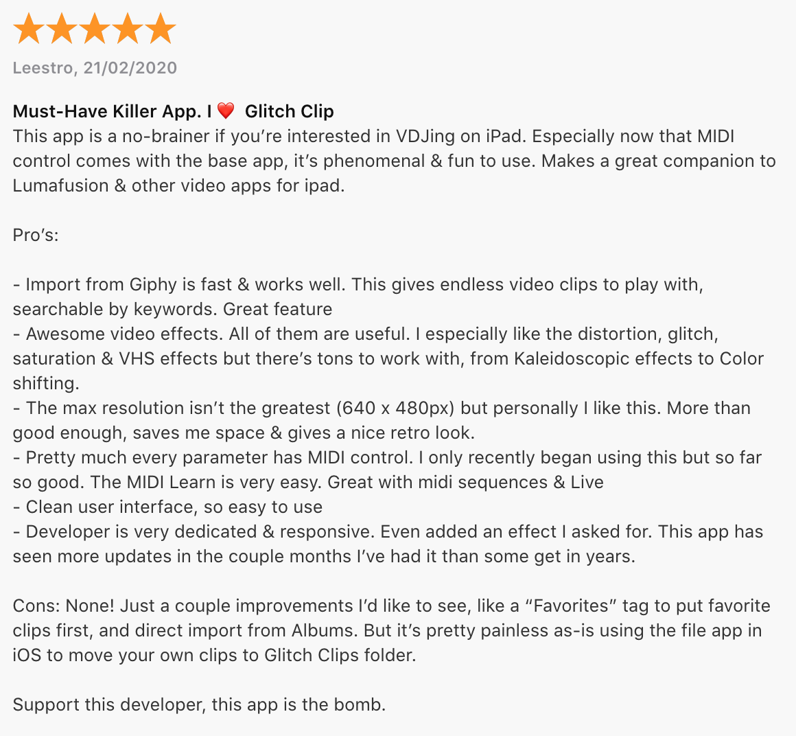
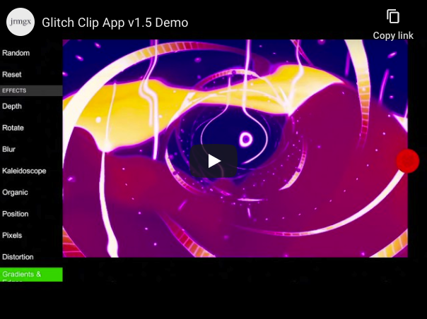
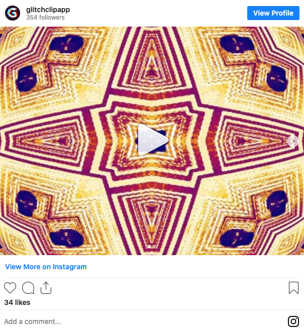
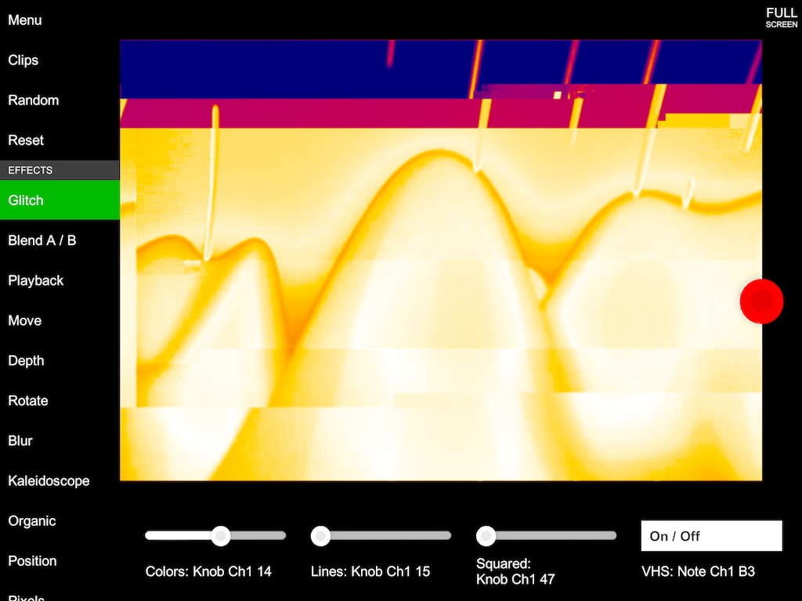
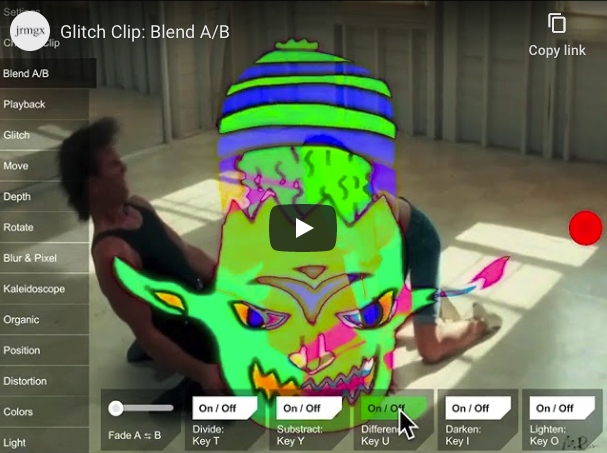
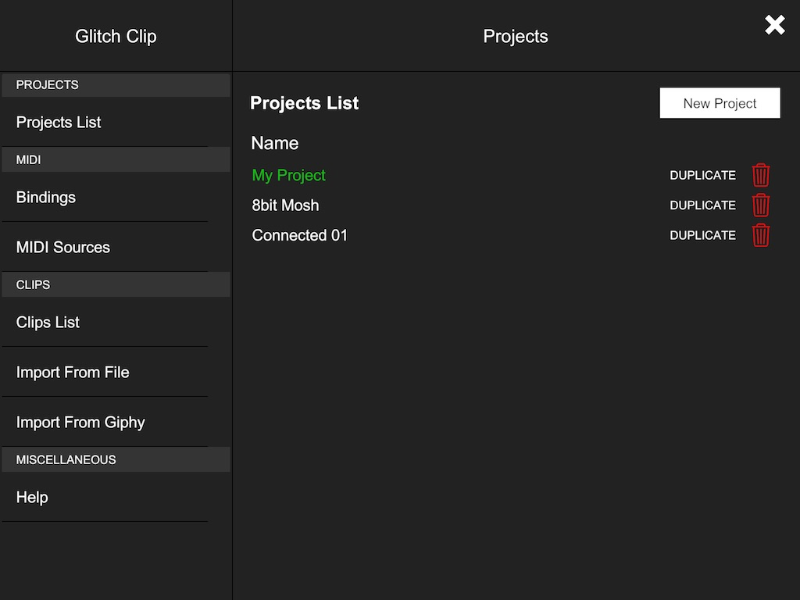
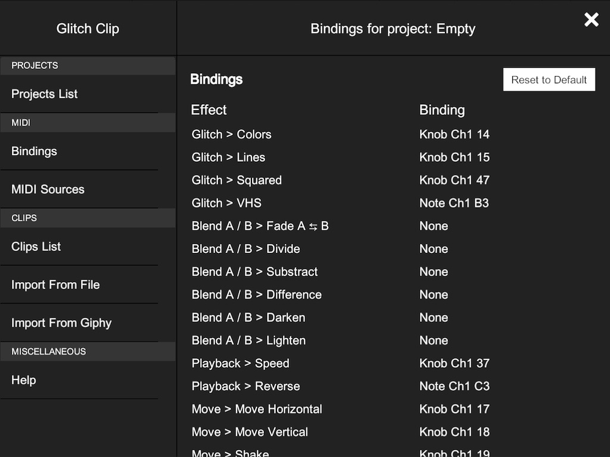
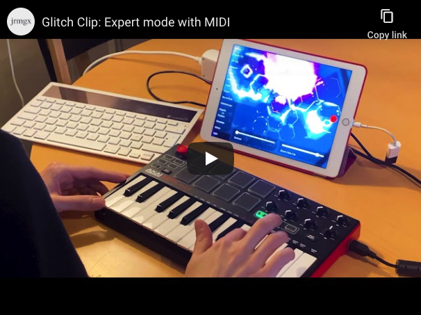
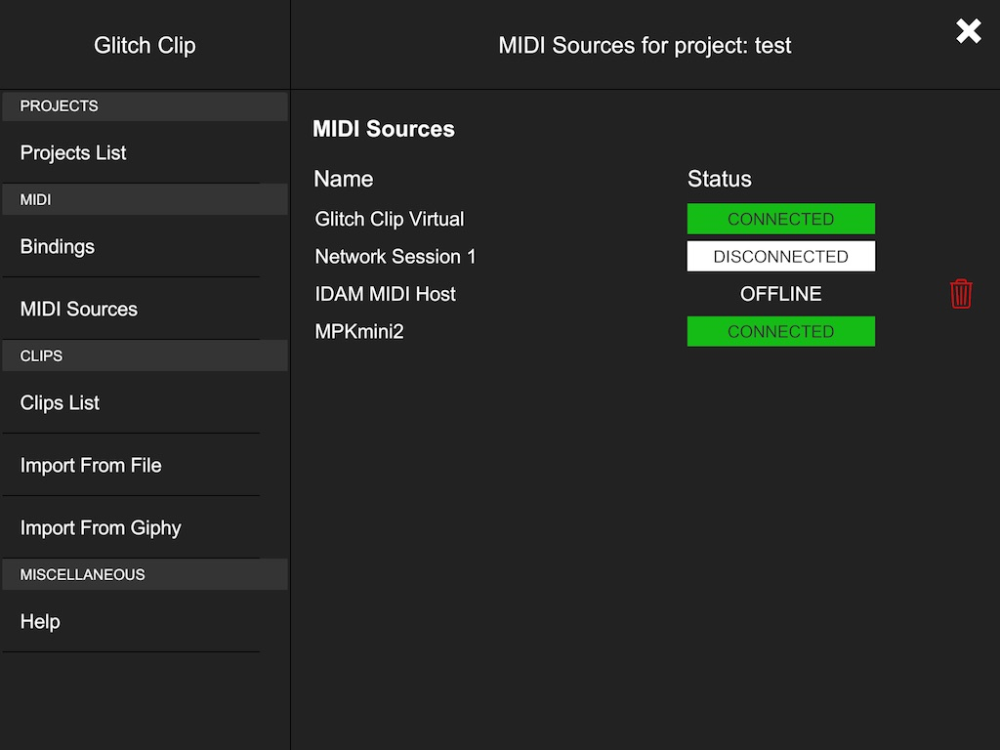
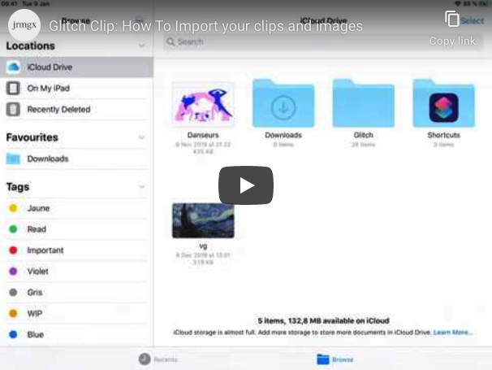

This project has been sold
This is an archived version of the page. Last update was on May 2020.
Glitch Clip for iPad
Download on the App Store for iPad
What is Glitch Clip?
Create generative videos thanks to artsy visual effects (kaleidoscope, mosaic, twist and 20+ more) or use Glitch Clip to make creative VJing shows with live music.

Download on the App Store for iPad

1 / Select short video clips and start remixing it. Add effects (kaleidoscope, mosaic, twist and more) and glitch things!
2 / Switch from one clip to another really fast, it's made for live performances. You can also import your own clips.
3 / Explore generative art, fine tune your effect stack to make artsy videos you can then share with your friends!
4 / Connect a keyboard or a MIDI controller to the app. From here everything is possible: play live from your controller or synchronize your DAW.
Glitch Clip is made for video DJing (VJing) but feel free to have fun and use it your own way!

Help
This documentation is for the 1.5 versionCheckout Glitch Clip Roadmap
User Interface
Top Menu Entries
Effects
About "Blend A/B"
Recording
Fullscreen Mode
Menu
Projects
MIDI
Clips
Limitations
What about GIF?
User Interface
Top Menu Entries
On the top left you have four entries: Menu, Clips, Random and Reset.
Menu will open the settings menu (see below it has its own help section),
Clips open the Clips selector which allows to change the current clip (for the current Slot)
and change the active Slot A or B (see below for more information),
Random will apply random effects and Reset will reset all the effect to their default values.
Effects
Still on the left, behind the "effects" divider, you have the effect groups list,
choose one and then on the bottom you will find the corresponding effects.
An effect can either be a slider effect where you can change the intensity of the effect,
or a button effect where you can activate/deactivate the given effect.
About "Blend A/B"
The Blend A/B effect group has a Fade slider and different blending modes

Choose two clips, one in Slot A and one in Slot B (by activating Slot B),
then you can fade from Slot A to Slot B or if a blending mode is activated
you will have it applied between your two Slots.
You can bind the Fade effect to a MIDI knob an understand its full potential!
Note: if you select the same clip for both slots, they will be synchronized (minus one frame) that will give you some cool effect when playing with blend mode!
Recording
Of course you did not missed the red record button,
it's usage is easy, tap on it to start a screen recording
then tap again to stop.
You can use the App as usual while recording, the UI won't show on the final video.
You will find the resulting video on your iPad Gallery, ready to be shared!
Full Screen
If you hided the user interface by going full screen and can not find the button to show it back, tap on the screen with 3 fingers!
Menu
The main menu is divided in sub-category: Projects, MIDI and Clips
Projects

Glitch Clip has a basic but solid project manager.
A project is defined by a name and includes clips, bindings and other settings.
From here you can create a new project with the button on the top right.
You then have the list of existing projects. Tap on one entry to load that project.
The duplicate action allows you to copy that project, all its settings, bindings and clips to a new one: it will ask for a new name.
The trash icon is to delete the project. Note: you can not delete the current loaded project.
MIDI
MIDI section has two main entries, Bindings and MIDI sources
Bindings

To bind a key/knob to an effect, find the effect group > name and tap on its name.
The name will turn green, now you should type on the key/pad
(or turn your knob). The App will then associate this entry to that effect.
You can also associate a clip to a key!
The "Reset to Default" button will ask you if you want to get back to default bindings

You don't have a MIDI controller?
Check Out Expert Mode with a Keyboard
MIDI Sources

Here you will find the MIDI sources that Glitch Clip has detected.
A source has three potential status: Connected, Disconnected and Offline.
- Connected: The given device is online and the app will receive data from it (tap to change to Disconnected)
- Disconnected: The given device is online but the app will not receive data from it (tap to change to Connected)
- Offline: The given device has been detected by the App in the past, but is now offline (tap to remove if you want)
Clips
On the clip list you will find the current list of clip for this project.
Import from Giphy
You can navigate to the Giphy tab and make a search here,
tap on the clip you like, check the preview.
If it's fine for you tap "import" and you go your new clip!
Import your clips
Format
Glitch Clip works with a very specific video format:
It's 10 seconds maximum / 640 x 480px / 25 FPS.
If your video source is different, the importer will try to convert it:
longer video will be cut (to 10 seconds) and if needed will be resized (to 640 x 480px)
The importer will alway assume that you are using a 25 FPS video source or less.
Alright, got your file?
Let's import, it's quite easy:
- When you have the video file, copy it in the File App in your iPad
- Move it to the Glitch Clip directory (first level)
- You should now see that video in the Video Manager (File tab) inside the Glitch Clip App itself.
- Tap on it to import
You can also import static JPG or PNG images with the same process
Limitations
Glitch Clip is build for performances first because the App is used for live VJing that need maximum reactivity.
This means that it has some limitations to maintain that level of responsiveness:
- Video Clips are 10 seconds in duration maximum
- Video Clips are 640 x 480px in size maximum
- Video Clips must be playing at 25 frames per seconds or less
- Sound is not handled
That also means the effect stack is ordered a certain way and not another,
some effects are very intensive for the App and need to be handled at a specific place in the stack.
Note that some other effects are at that position on the stack for artistic reason.
Positions could change over versions.
What about GIF?
Unfortunately for now GIF are not supported, I tried at first, but I find out that GIF is an horribly hard image format and most of the time it did not work as expected so I prefer to remove GIF import for now.
But you want to know my little secret?
Upload your GIF on giphy and then get it from the search!
Contact
Found a bug, got a question? Contact the new owner.
This is an archived page.
I will also enjoy any kind of chat about glitch, about VJing and anything you have made with the App!
Privacy
Glitch Clip is a paying App, so we don't need and we don't want to get your personal data and monetize it.
Glitch Clip do not collect personal data, do not store anything about you.
The only exception is: if you make an in-app purchase,
we are storing this information for analytics purpose only,
and that the only thing Glitch Clip is getting from you. Ever. Period.
If you contact the support for a bug or a question, your email and address will be deleted when the conversation has ended or problem is solved.
Attribution and Copyrights
- Icon: Eye by Gregor Cresnar (Creative Common)
- Icon: Cloud Download By Kevin White (Creative Common)
- Icon: Trash By Vicons Design (Creative Common)
- Icon: Dice by Juicy Fish (Creative Common)
- Icon: Video Camera by Free Icons from the Noun Project